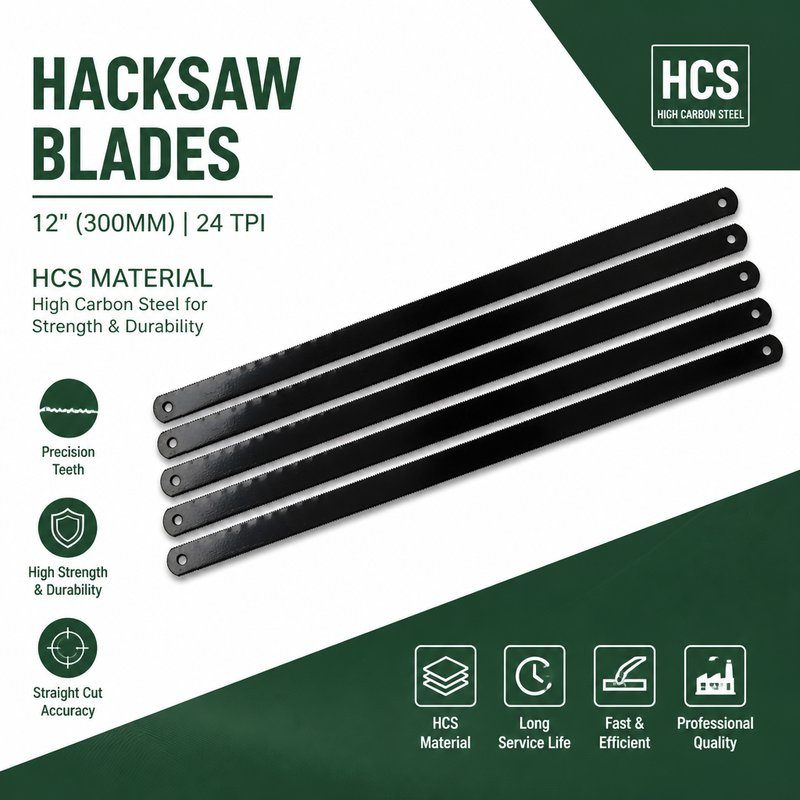

14、18、24、32 TPI 怎麼選？鋸片齒數選擇的實務對照表

採購最常問的一個問題不是價格，而是「這支鋸片能切什麼」。答案幾乎都取決於兩個數字：齒數（TPI）與齒距。選錯齒數，不是切不動，就是切得慢、鋸片提早斷。
先看原則：同一個切口，至少要有 3 齒同時接觸
齒數太少的鋸片用在薄管上，齒尖會勾住管壁、把齒崩掉；齒數太多的鋸片切厚料，齒槽塞滿切屑、排不掉，鋸片就開始發熱、跑偏、斷裂。
實務上的判斷方式是看材料厚度，不是看材料種類：
| 材料厚度 | 建議 TPI | 典型用途 |
|---|---|---|
| < 3 mm（薄管、薄板、型材） | 24 – 32 | 不鏽鋼薄管、銅管、電線管、角鐵 |
| 3 – 6 mm | 18 – 24 | 一般鐵管、圓棒、螺栓 |
| 6 – 12 mm | 14 – 18 | 厚壁管、實心圓鐵、軸件 |
| > 12 mm | 14 或更低 | 大料、鑄鐵、拆除工程 |
常見材料的實際建議
不鏽鋼管（薄壁）
用 24 或 32 TPI，並且低轉速、輕壓力。不鏽鋼會加工硬化，壓力一大、速度一快，切口表面立刻變硬，下一齒就切不動了。
一般鐵管、水電管
18 或 24 TPI 最順。18 TPI 排屑快、切得快；24 TPI 切口比較平整，適合之後要套牙或焊接。
實心圓鐵、螺栓
14 或 18 TPI。實心料最怕排屑不良，齒槽要够大。
PVC、塑膠管
24 TPI 以上，避免齒尖把管壁扯裂。切塑膠時用新鋸片反而容易黏屑，舊一點的鋸片更好用。
什麼時候一定要用雙金屬（Bi-Metal）
高碳鋼（HCS）鋸片硬度高、切口快、單價低，適合一般鐵、銅、塑膠與間歇使用。但遇到下面三種情況，我會建議直接換雙金屬：
- 切不鏽鋼、工具鋼、軸承鋼：HCS 齒尖硬度够，但齒體韌性不足，容易崩齒。
- 連續大量切割：例如工地一天切上百刀，HCS 會因為熱累積而快速鈍化。
- 管子有震動、夾持不穩：雙金屬的齒體可以吸收衝擊，不會整片斷給你看。
反過來說，如果是一般維修、DIY、偶爾切幾刀，HCS 的性價比還是最高的——尤其是經過雙重熱處理（齒尖 HRC 63、齒體 HRC 38–42）的規格，韌性已經比傳統全硬化鋸片好很多。
三個現場常見的錯誤
- 用 32 TPI 切厚鐵：切得動，但慢到讓人放棄，而且齒槽塞屑後鋸片會過熱。
- 用 14 TPI 切薄不鏽鋼管：齒尖勾住管壁，一用力就崩齒，看起來像「鋸片品質不好」，其實是選錯。
- 新舊鋸片混用同一行程：舊鋸片已經磨鈍，會把新鋸片帶偏，切口越切越歪。
小結
記住一句話就好：薄料用密齒、厚料用疏齒；不鏽鋼放慢、實心料排屑。採購時如果不確定，把材料、厚度、一次要切幾刀告訴我們，我們可以直接建議對應的 TPI 與材質。
需要這個規格的樣品或報價？我們在台灣生產，可做 OEM／自有品牌包裝。
取得報價